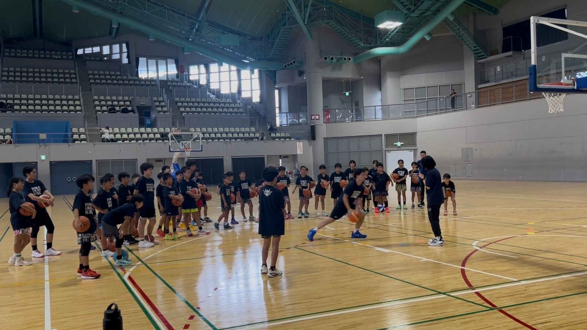

コートを3分割、実戦スキルを叩き込む —— 琉球ゴールデンキングス「キングスバスケットボールスクールサマーキャンプ2026」
沖縄バスケットボール株式会社(沖縄県沖縄市、代表取締役社長・仲間陸人／B.LEAGUE・琉球ゴールデンキングス運営会社)が運営するキングスバスケットボールスクールは、7月29日・8月5日・8月19日の3日間、小学4〜6年生を対象に「実戦で使えるスキルの修得」をテーマとした『キングスバスケットボールスクールサマーキャンプ2026』を実施したと8月21日発表した。

コートを3エリアに分け、段階的に学ぶ
キャンプでは、バスケットボールの攻撃をコート上の3エリア——エリア1(3Pラインの外側)、エリア2(ミドルレンジ)、エリア3(ペイントエリア)——に分類し、日ごとにテーマを変えて練習した。DAY1はエリア1でディフェンスとのズレを作る1on1(ボールミート・ジャブステップ・ドロップスタンスを習得)、DAY2はエリア2で横並びや回り込まれた状況からの緩急を使った突破(パンチストップ・ロッカーモーション・リトリート・ヘジテーション)、DAY3はエリア3でのフィニッシュスキル(パワーレイアップ・ユーロステップ・スウィングステップ)と、3日間を通じてボールの受け方から状況判断、シュートバリエーションまでを段階的に積み上げる構成だった。
黙々と取り組んだ初日から、声が響いた最終日へ
リリースによれば、初日は与えられた課題に集中して黙々と取り組む様子だったが、2日目からは選手同士の声かけが増え、コーチにアドバイスを求めたり練習の合間に習ったスキルを復習したりする姿も見られるようになったという。最終日に行われた「1on1コンテスト」では、3日間で学んだスキルを積極的に実践する選手が多く、シュートが決まるたびに会場から拍手が起きたと報告されている。
MVP・MIPを表彰、全員が修了証を手に
最終日にはグループごとの1on1コンテストの優勝者に加え、MVPとMIPの発表も行われた。受賞に届かなかった選手も含め、参加した全員が修了証を受け取ったという。キングスバスケットボールスクールは「沖縄をもっと元気に！」の理念のもと、今後もスクール生をはじめ地域でバスケットボールに取り組む選手たちの技術向上や成長を後押ししていくとしている。
出典: 沖縄バスケットボール株式会社プレスリリース「『キングスバスケットボールスクールサマーキャンプ2026』実施のご報告」（PR TIMES・2026年8月21日）
https://prtimes.jp/main/html/rd/p/000001464.000036112.html